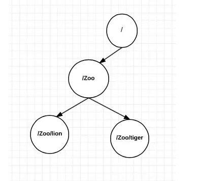
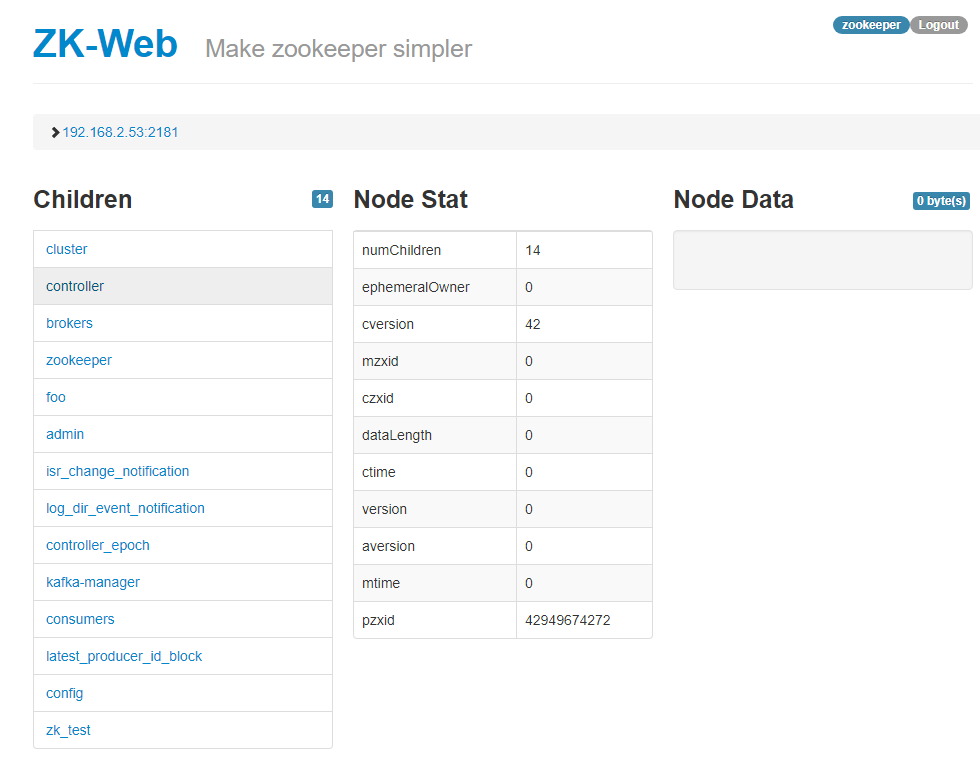

Tổng quan:¶
Zookeeper là một dịch vụ dùng đến khi muốn duy trì sự thống nhất thông tin của các service chạy cluster: distributed configuration management , consensus building through coordination and locks.
Zookeeper luôn cài kèm khi ta cài Kafka, giúp các kafka-broker đạt được sự đồng thuận về các thông tin như: số lượng, id, địa chỉ của các broker; mỗi topic có bao nhiêu partition, mỗi partition nằm tại broker nào; khi có reassigne, rebalance topic sẽ thống nhất chuyển patition về đâu, và một số thông tin phụ khác
(Trong stream4flow, zookeeper cũng chỉ có vai trò giúp kafka trong đạt đồng thuận)
Như vậy về cơ bản , ý nghĩa của zookeeper cũng giống etcd : lưu các thông tin của cluster, thông báo khi có thay đổi. Một so sánh 2 service: https://stackshare.io/stackups/etcd-vs-zookeeper
Các thao tác vận hành zookeeper chỉ xoay quanh thêm, sửa xóa dữ liệu lưu trên zookeeper.
Tổ chức dữ liệu trong zookeeper:¶
Dữ liệu trong zookeeper tổ chức như dạng cây, cây thư mục:

- Mỗi node trong cây gọi là zNode
- Mỗi zNode được định danh bởi path đến node. ví dụ ở hình có 4 Znode: /; /Zoo; /Zoo/lion; /Zoo/tiger
- Mỗi zNode có thể ghi một data (string, byte)
- Mỗi zNode có thể có các Znode con
- Ta có thể thêm sửa xóa zNode cũng như data trên node, add node con, tuy nhiên không thể rename node
Thực hành :¶
Sau khi cài kafka, thường ta đã có zookeeper chạy kèm, cổng 2181
a) thao tác với console:
Vào thư mục cài kafka ( ~/kafka), mở zookeeper console với:
bin/zookeeper-shell.sh localhost:2181
Connecting to localhost:2181
Welcome to ZooKeeper!
JLine support is disabled
WATCHER::
WatchedEvent state:SyncConnected type:None path:null
- Xem các một node bất kỳ: lệnh ls
ls /
[cluster, controller, brokers, zookeeper, foo, admin, isr_change_notification, log_dir_event_notification, controller_epoch, kafka-manager, consumers, latest_producer_id_block, config]
ls /brokers
[ids, topics, seqid]
- Thêm một znode zk_test với data “test”
create /zk_test my_data
Created /zk_test
- xem data node /zk_test :
get /zk_test
my_data
...
- thêm con child1 vào /zk_test :
create /zk_test/Child1 "firstchild"
Created /zk_test/Child1
Các thao các cơ bản xem thêm tại: http://www.corejavaguru.com/bigdata/zookeeper/cli
b) Sử dụng drashboard:
Để thuận thiện nhanh chóng ta có thể dùng drashboard:
docker run -d \
-p 8080:8080 \
-e ZK_DEFAULT_NODE=localhost:2181/ \
-e USER=zookeeper \
-e PASSWORD=zookeeper \
--name zk-web \
-t tobilg/zookeeper-webui
Ta sẽ tạo ra 1 web-UI lắng nghe cổng 8080. user:password zookeeper:zookeeper

Chọn vào host zookeeper : vd 192.168.2.194:2181 ( dùng localhost:2181 có thể lỗi do container không phân giải localhost là gì được). Ta có danh sách các Node nối với root 
CLick vào từng node để xem tiếp theo. Thêm sửa xóa ở gần chỗ footer của website.